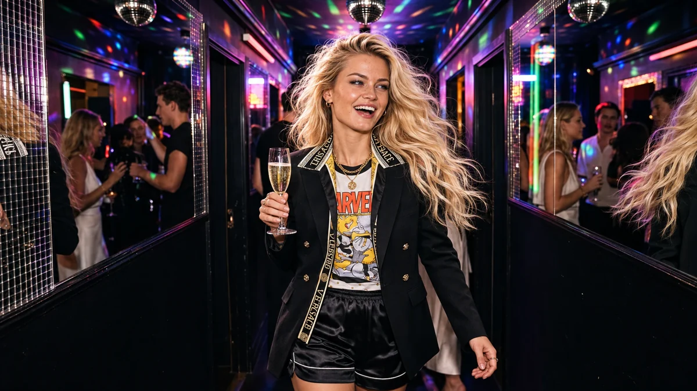
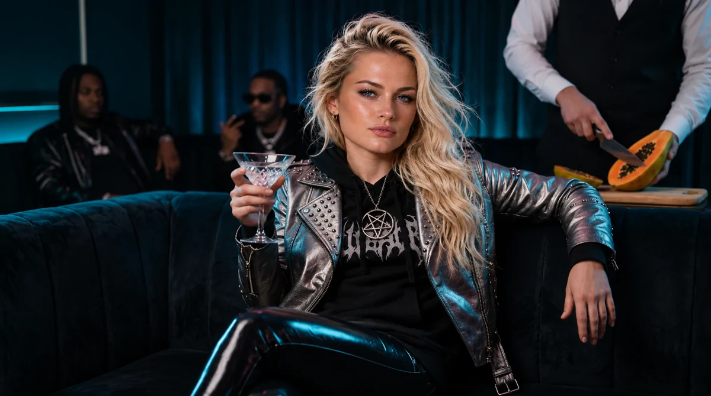
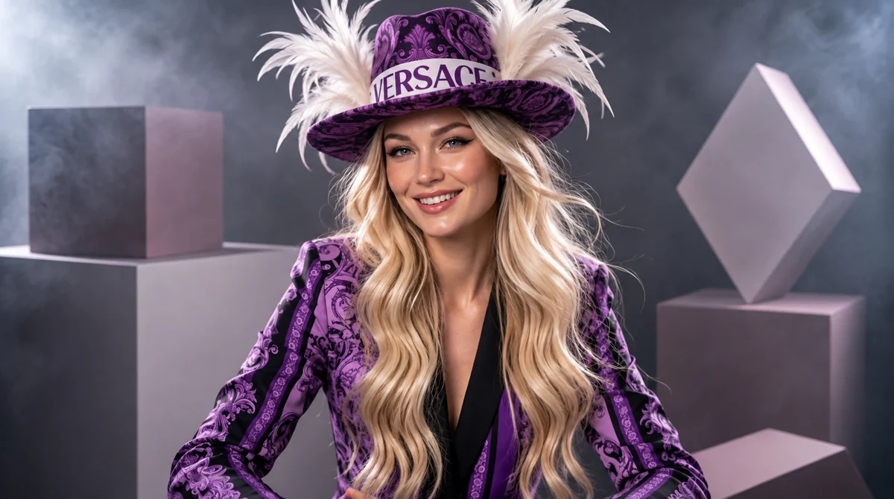
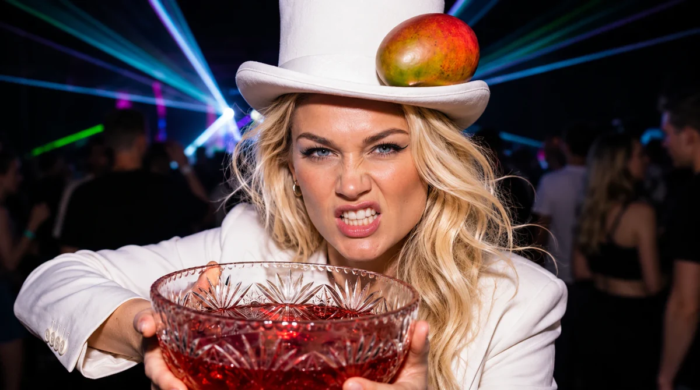

VICTORIA SIDNEY RECORDS / AFTER DARK
HER MUSIC. YOUR NIGHT.
VITAMUSIC
Життя — це вечірка.
Тож сяй, як можеш!
11 PREVIEWS / 03 ALBUMS
PRESS PLAY. STAY A LITTLE LONGER.
PRESS PLAY. STAY A LITTLE LONGER.
ВІТА / МУЗИЧНИЙ СВІТ
ТВОЯ НІЧ ПОЧИНАЄТЬСЯ ТУТ.
За пультом — ВІТА.
На танцполі — ти.
Трохи блиску. Трохи зухвалості. І пісні, під які хочеться жити голосніше. Слухай VITA Music — обирай настрій, а вона обере ритм.
01 / VITA ВМИКАЄ СВОЄ
Твій нічний сет.
11 УРИВКІВ. ОБИРАЙ СВІЙ.
НАВУШНИКИ — ЗА БАЖАННЯМ. ТАНЦІ — ТЕЖ.
НАВУШНИКИ — ЗА БАЖАННЯМ. ТАНЦІ — ТЕЖ.
VITA SYSTEM / CHROME DECKS01 — 11PREVIEW SESSION
ГОТОВА ЗАПАЛЮВАТИ
ДилеR
V / MUSIC
Натисни «Відтворити» або обери пісню. Звук почнеться лише після твого натискання.
Тут звучать короткі уривки.
Повні композиції — на музичних платформах.ВІТА НА SPOTIFY
Повні композиції — на музичних платформах.ВІТА НА SPOTIFY
НЕ ШУКАЙ ПРИВОДУ.
Просто
виходь у світло.
02 / ПІД ОДНИМ ДИСКО-ШАРОМ
Тут усі сяють.
Срібло ловить світло.
Ти ловиш свій момент.


03 / VITA RECORD COLLECTION
Три альбоми.
Три її світи.
33 КОМПОЗИЦІЇ / 03 ОБКЛАДИНКИ
ВІДКРИЙ АЛЬБОМ. ЗАЗИРНИ ВСЕРЕДИНУ.
ВІДКРИЙ АЛЬБОМ. ЗАЗИРНИ ВСЕРЕДИНУ.
VITA / THE PARTY GOES ON
Ще один трек.
І ще одна ніч.
Іноді найкращий план — увімкнути улюблену пісню. А решта якось затанцюється.
ПОВЕРНУТИСЯ ДО ПУЛЬТА

04 / VITA SINGLES · MUSIC SHOWROOMS
Сингли ВІТИ.
Кожна пісня — окремий світ. Відкрий її шоурум, слухай музику та роздивляйся історію.
 01 / VITA SINGLEWOOF-WOOF / THE CHAOSХто випустив собак?ВІДКРИТИ ШОУРУМ ↗
224VITA / SINGLE02 / VITA SINGLETHE ULTIMATE RACEТраса 224ВІДКРИТИ ШОУРУМ ↗
01 / VITA SINGLEWOOF-WOOF / THE CHAOSХто випустив собак?ВІДКРИТИ ШОУРУМ ↗
224VITA / SINGLE02 / VITA SINGLETHE ULTIMATE RACEТраса 224ВІДКРИТИ ШОУРУМ ↗
 03 / VITA SINGLEBLUE LAGOONБлакитна ЛагунаВІДКРИТИ ШОУРУМ ↗
03 / VITA SINGLEBLUE LAGOONБлакитна ЛагунаВІДКРИТИ ШОУРУМ ↗
 04 / VITA SINGLETERRACOTTA ELEPHANTТеракотовий СлонВІДКРИТИ ШОУРУМ ↗
04 / VITA SINGLETERRACOTTA ELEPHANTТеракотовий СлонВІДКРИТИ ШОУРУМ ↗
 05 / VITA SINGLEVANILLA BRIDGESВанільні МостиВІДКРИТИ ШОУРУМ ↗
05 / VITA SINGLEVANILLA BRIDGESВанільні МостиВІДКРИТИ ШОУРУМ ↗
 06 / VITA SINGLESILVER RAINSСрібні ДощіВІДКРИТИ ШОУРУМ ↗
06 / VITA SINGLESILVER RAINSСрібні ДощіВІДКРИТИ ШОУРУМ ↗
 07 / VITA SINGLECANDY DEALERЦукерковий ДилеRВІДКРИТИ ШОУРУМ ↗
07 / VITA SINGLECANDY DEALERЦукерковий ДилеRВІДКРИТИ ШОУРУМ ↗VITA SYSTEM / NEW ERA / 224 FM НОВІ ШОУРУМИ З’ЯВЛЯТИМУТЬСЯ ТУТ